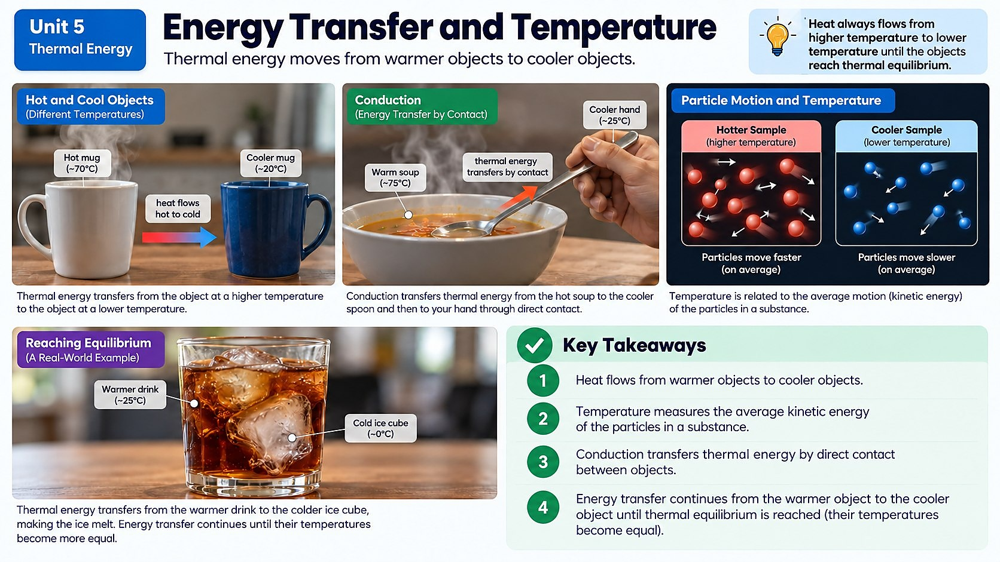

When you touch a metal doorknob and a wooden door on the same cold morning, the doorknob feels colder, even though they're the same temperature. What's actually going on, and how is that different from temperature itself?

Heat vs. Temperature: Not the Same Thing
People use the words "heat" and "temperature" like they mean the same thing, but in science they're two different ideas. Temperature is a measurement of how fast the particles in a substance are jiggling around, on average. Heat is thermal energy actually moving from a hotter object to a cooler one. Think of it this way: temperature is like a speedometer reading for a swarm of tiny particles, while heat is the energy that flows between two swarms when they meet.
Here's the mind-bender: a huge iceberg and a cup of hot tea can have very different temperatures, but the iceberg actually contains way more total thermal energy, simply because it's made of a massive amount of matter. Total thermal energy depends on temperature AND on how much matter (and what kind) you have. That's why a spark from a sparkler can be thousands of degrees but won't burn you: there's so little matter in that tiny spark that it doesn't carry much total energy.
Heat always flows one direction on its own: from hot to cold, never the reverse. That's why your hot cocoa cools down toward room temperature and never spontaneously gets hotter sitting on the counter, and why the ice cube in your drink melts while cooling the soda around it.
Why the Metal Doorknob Feels Colder
Back to that doorknob mystery: metal and wood in the same room are actually the same temperature. But metal is a conductor (a material that transfers thermal energy quickly) while wood is an insulator, a material that resists thermal energy flow. When your warm hand touches the metal, heat rushes out of your hand fast, and nerve endings in your skin sense that rapid energy loss as "cold." Touch the wood, and heat leaves your hand much more slowly, so it feels warmer even though the thermometer would read the exact same number for both.
This conductor-versus-insulator idea is everywhere in daily life. Pots and pans are often made of metal (a good conductor) so heat moves quickly from the stove into your food, but their handles are often plastic or wood (insulators) so you don't burn your hand. A thermos keeps coffee hot for hours by using layers of insulating material (and often a vacuum gap) to drastically slow the flow of heat out of the hot liquid.
Designing to Control Heat Flow
Engineers use exactly this science when they design things like coolers, thermoses, winter coats, and solar cookers. If you want to keep something cold (like ice in a cooler on a summer trip), you choose insulating materials (foam, thick plastic, trapped air pockets) that slow down heat flowing in from the hot outside world. If you want to capture and use heat, like in a solar cooker, you design surfaces that absorb sunlight efficiently and trap that thermal energy, sometimes using dark colors and reflective panels to funnel more energy in one direction.
Real engineering always involves design criteria (what the device needs to do, like "keep ice frozen for 6 hours") and constraints (limits like cost, size, or available materials). Engineers build a prototype, test it (often by measuring temperature over time), and then redesign based on the data. If your cooler's ice melts too fast, you might add a layer of insulation or seal gaps where warm air sneaks in, then test again.
Spacesuits push this same design thinking to an extreme. In the vacuum of space, the sunlit side of a suit can bake at well over 120 degrees C while the shaded side drops below -100 degrees C at the very same moment, with no air around the astronaut to even out the difference. Engineers handle this with layers: an inner garment laced with thin tubes that circulate cool water to pull excess body heat away from the astronaut's skin, and several outer layers of insulating material wrapped in reflective coatings that bounce back both incoming sunlight and outgoing body heat. Skip any one of those layers, and an astronaut would overheat or freeze within minutes: proof that understanding heat flow isn't just classroom knowledge but life-or-death engineering.
Evidence That Energy Has Moved
How do you know when thermal energy has been transferred to or from an object? You look for evidence: a change in temperature (a thermometer reading goes up or down), a change in motion (particles speeding up or slowing down, which can even change the state of matter), or sometimes a change in sound (like popping and cracking as materials expand or contract when heated or cooled). Whenever you see one of these changes, energy has moved into or out of that object. It doesn't just happen on its own.
Specific Heat Capacity: Why Some Materials Resist Temperature Change
Not all matter heats up at the same rate, even with identical energy input and identical mass. Scientists measure this using a property called specific heat capacity: the amount of thermal energy needed to raise the temperature of one gram of a substance by one degree Celsius. Water has an unusually high specific heat capacity compared to most materials, which means it takes a large amount of thermal energy to change its temperature much at all, and it releases just as much energy when it cools back down.
This explains why coastal cities tend to have milder weather than cities further inland. The huge mass of nearby ocean water absorbs enormous amounts of thermal energy on hot days without its own temperature rising very much, then releases that stored energy slowly overnight, keeping nearby land from swinging as sharply between hot afternoons and cold nights. Metal, by contrast, has a low specific heat capacity: it takes very little added energy to raise its temperature a lot, which is part of why a metal playground slide can become dangerously hot in direct summer sun while a nearby patch of grass, made mostly of water-rich plant cells, stays much cooler.
Specific heat capacity connects to conductors and insulators, but it isn't the exact same idea. A material can conduct heat quickly (like metal) and also change temperature quickly (low specific heat) at the same time, while water conducts heat only moderately but strongly resists changing temperature. Engineers choose materials based on both properties together, depending on whether they need something that changes temperature fast, like the metal in a frying pan, or holds its temperature steady, like the coolant that circulates through a car engine to keep it from overheating.
Real-World Connections
Sea Breezes at the Beach
Land heats up and cools down faster than water, which is why a cool breeze often blows from the ocean toward shore on a hot afternoon, as heat flows from the warmer land and air toward the cooler sea air replacing it.
Why Metal Feels Colder Than Wood
A metal railing and a wooden fence sitting outside at the same temperature feel different to the touch because metal pulls heat away from your hand much faster than wood does.
Meet the Scientist
Meteorologists
Meteorologists study exactly how heat moves through the atmosphere and oceans to predict weather, from daily sea breezes to massive hurricanes. Understanding heat flow between land, water, and air is one of the most basic tools they use to build tomorrow's forecast.
Key Vocabulary
Bold, underlined words in the reading above are clickable too. Tap one to see its definition pop out. Or click or tap a card below to reveal the definition.
Explore More
Chapter Review
1. A metal spoon and a wooden spoon have been sitting on the same kitchen counter all morning. Which statement is TRUE?
2. Which best describes the difference between heat and temperature?
3. A tiny spark from a sparkler can be over 1,000°C but doesn't burn your skin when it lands on you briefly. Why not?
4. An engineer is designing an insulated lunch box to keep a cold drink cold for 8 hours. Which material choice best fits this goal?
5. You notice a metal railing outside making faint creaking and popping sounds on a chilly morning as the sun starts to warm it. What is this sound evidence of?
California Science Test (CAST) Practice
A student placed identical mugs of hot water (each starting at 80 degrees C) on a counter. One mug is uncoated metal, one is ceramic, and one is a double-walled insulated travel mug. The student measured the water temperature in each mug every 5 minutes for 20 minutes. The results are shown in the table.
| Time (min) | Metal Mug (C) | Ceramic Mug (C) | Insulated Mug (C) |
|---|---|---|---|
| 0 | 80 | 80 | 80 |
| 5 | 61 | 69 | 77 |
| 10 | 48 | 60 | 75 |
| 15 | 39 | 53 | 73 |
| 20 | 33 | 47 | 71 |
Based on the data in the table, which claim is best supported by evidence?